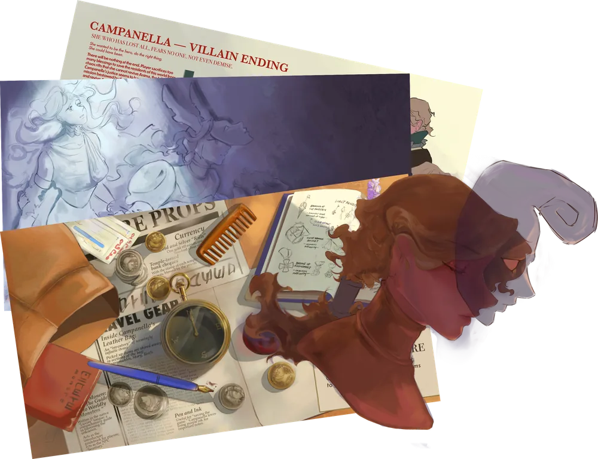
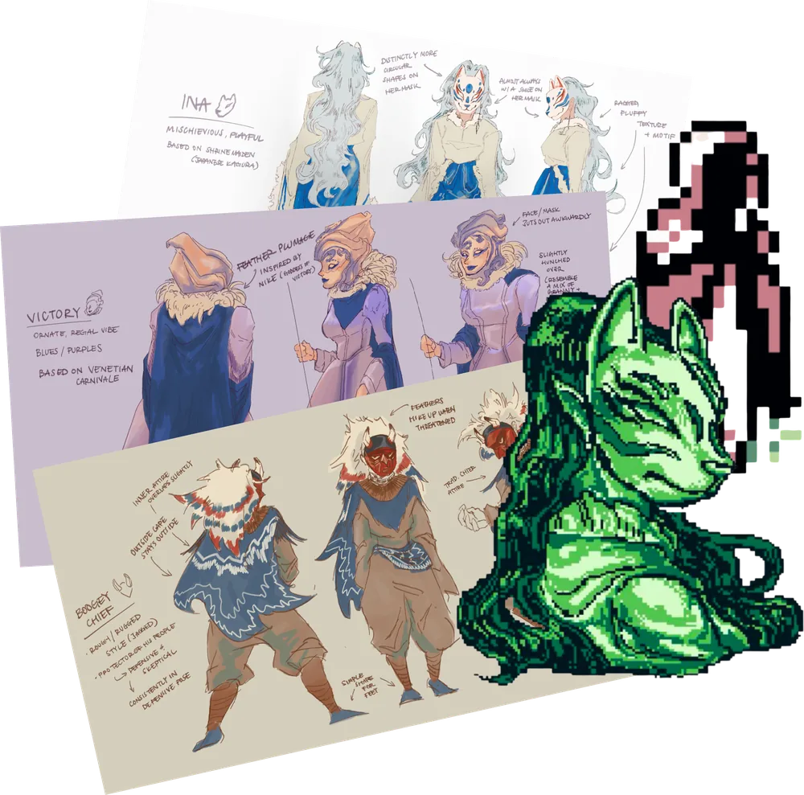
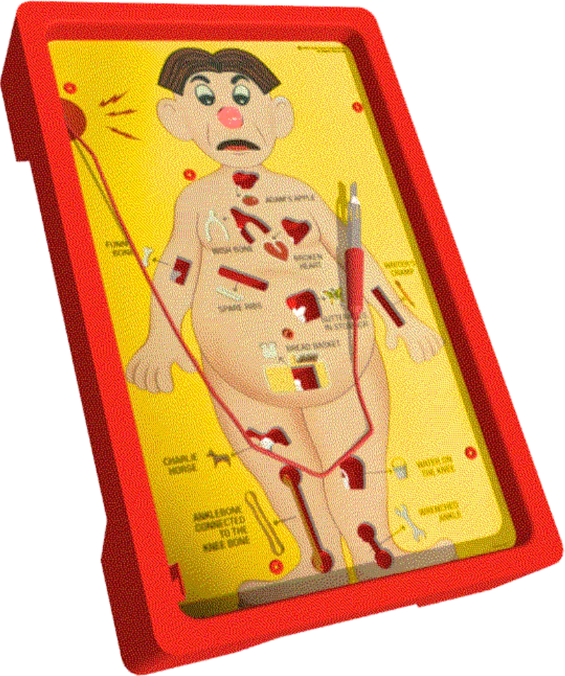
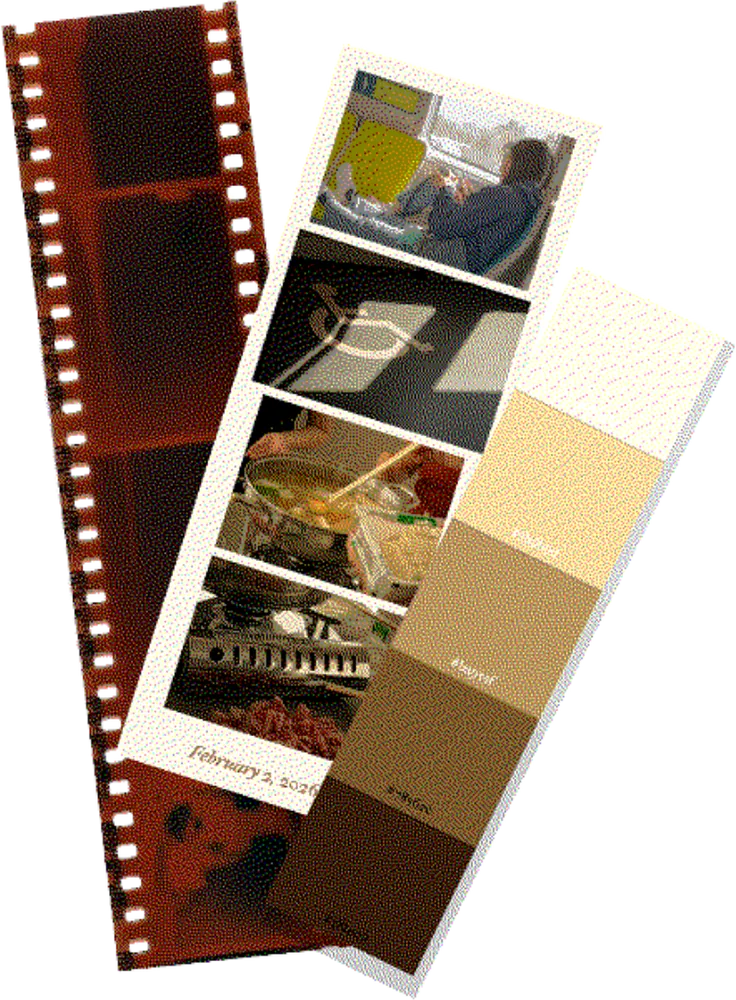
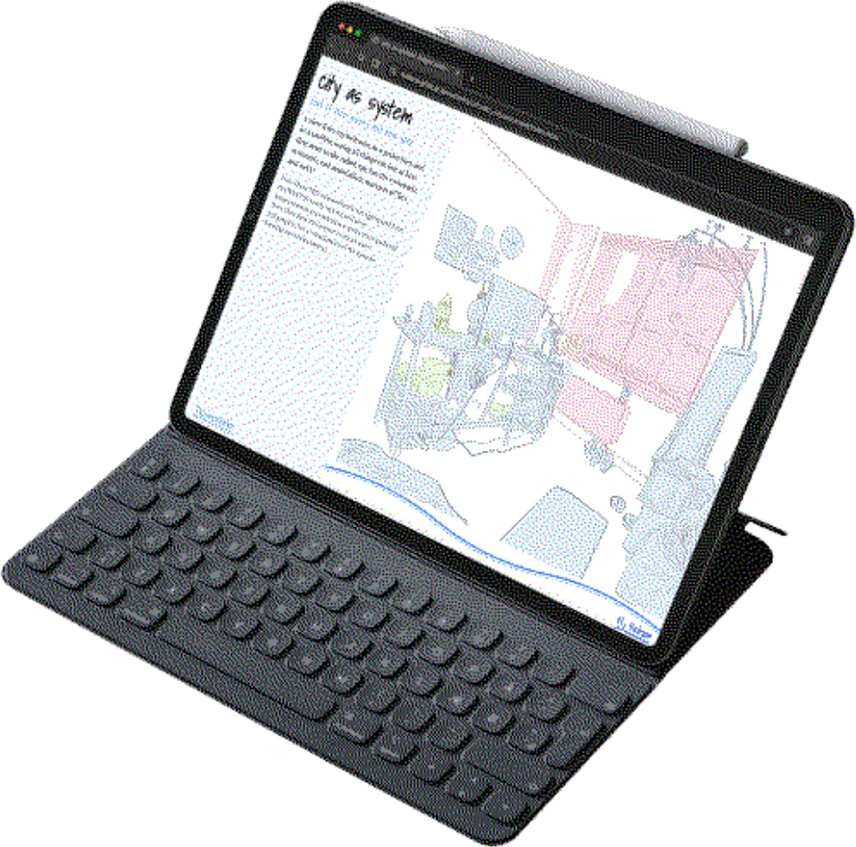
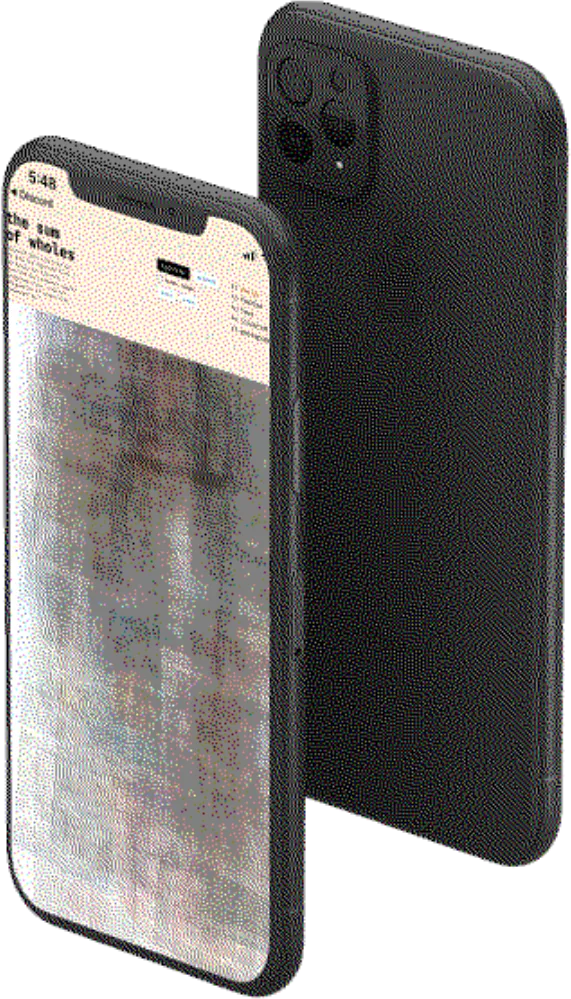

Playground
-

Monere
A game concept about the pursuit of everything as an omnipotent player, yet not an omnipotent in-game character.
-

N[u]ll
2-D Gameboy-style exploration game of identity and finding purpose.
-

Gods as Humans
A critique on speculative futures through physical hardware and software.
View project → -

Photobooth
Generate color palettes from photos through K-Means and Agglomerative clustering.
View project → -
The Lab's Digital Fridge
A visual collection of 3D-scanned calories consumed at work.
View project → -

City as Systems
A visualization of the Hudson's economic flows through PANYNJ trade data.
View project → -

Self as Systems
Who the algorithm thinks I am, vs. who it thinks a new user is.
View project →